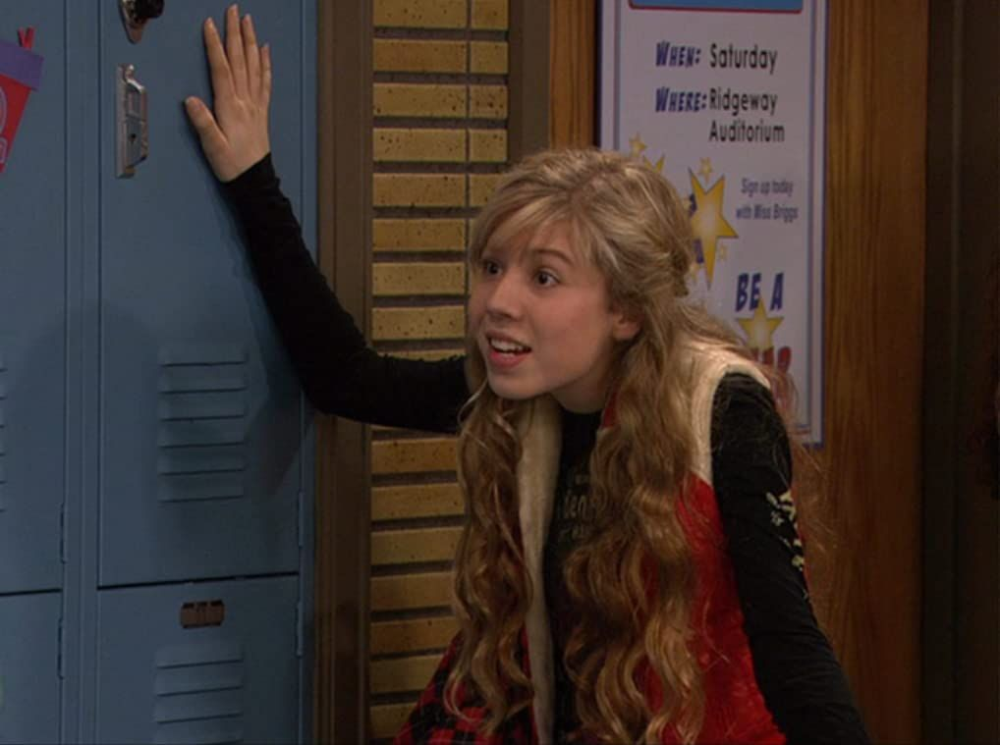

paper

Sobre mim
Estudante de Ciências Econômicas, fã de Econometria e atualmente pesquisando sobre Análise de Insumo-Produto. Usuário de Linux e da linguagem R. Este perfil apoia o Flamengo, o Hezbollah, o Hamas, o Irã, a recuperação do Pirulla e do nosso mano Oruam.
Marxismo
Análise crítica e luta de classes
Anti-imperialismo
Solidariedade internacional
Pró-Irã
Resistência e soberania
Palestina Livre
Justiça e autodeterminação
Data Science (R)
Tidyverse, análise de dados
MIP
Matriz Insumo-Produto
R / Tidyverse
Ferramenta de Análise
Economia Política
fuzilando neoclássicos
Background Music
Clique no play para ativar a trilha